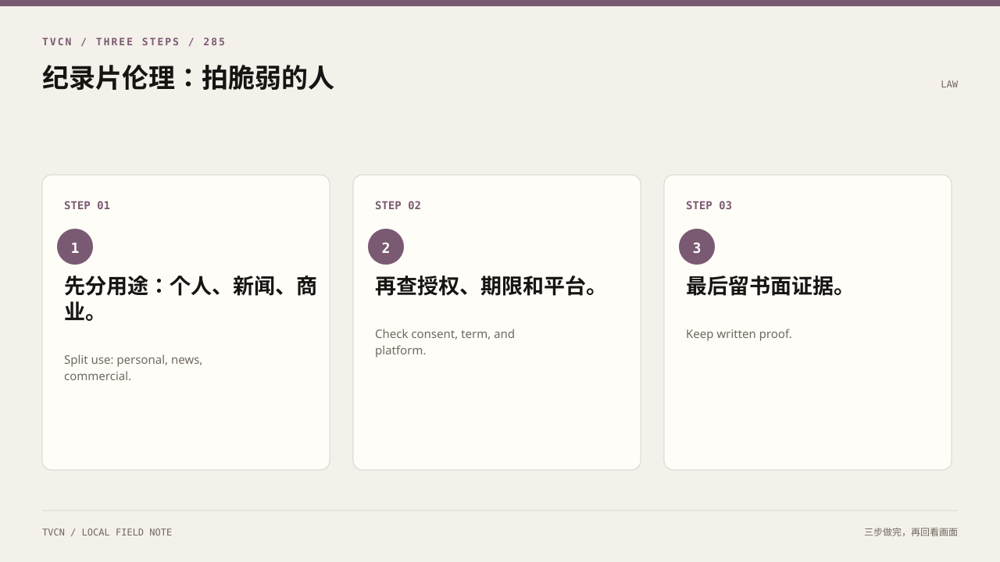

先问“他能不能承担被看见的后果”
拍真实人物， consent 不只是签一张纸。要让他知道片子上线后谁会看到、可能带来什么麻烦、他能不能在剪辑前看片。没有能力承担后果的人，尤其要谨慎。
把“对观众好看”与“对拍摄对象安全”分开评估；两者冲突时，先保人。
边界
真实不是把镜头贴到脸上。可以拒绝拍、可以停机、可以删掉已经拍到的素材；纪录片的力量不靠伤害换。
现场
问三件事：他知道后果吗、能退出吗、片子会伤害他吗；答案不清楚就不拍。
DIAGRAM / Law & ethics
三步流程

怎么做
- 用他能听懂的话说明片子上线后谁能看到。
- 写清他可以随时退出，并留下书面记录。
- 预判片子播出后可能对他造成的伤害，答案不清就不拍。
别踩
别拿“他同意了”当伦理过关；他可能不知道上线后谁能看到。
图片说明：本页封面、图解与步骤图是编辑示意或结构图，不是本页实测照片，也不能当作器材测试证据；AI 辅助生成的图会在图注标出。判断器材或画面，以正文的测试条件与现场记录为准。